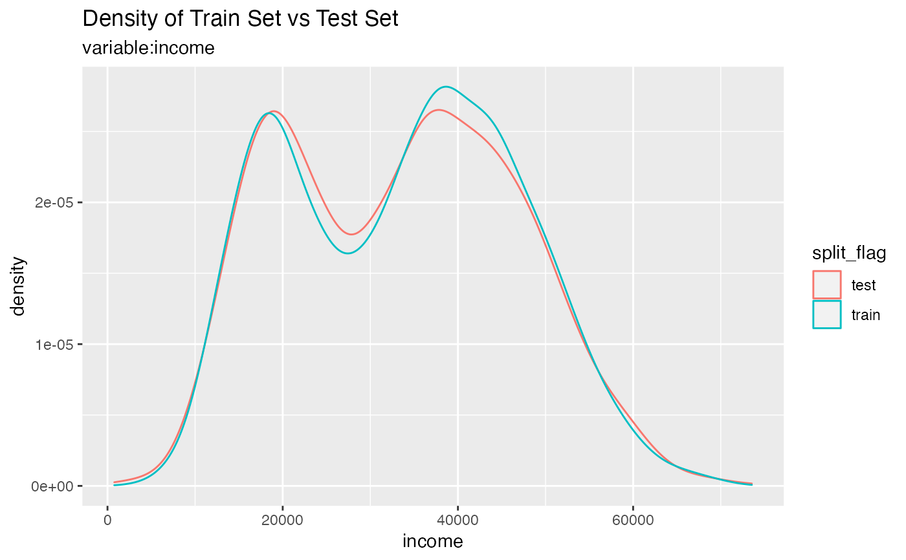
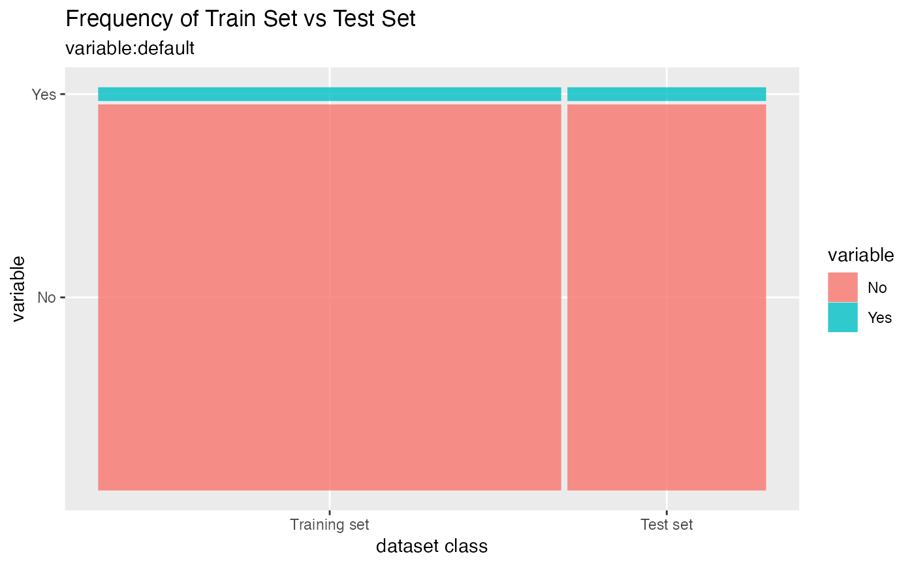
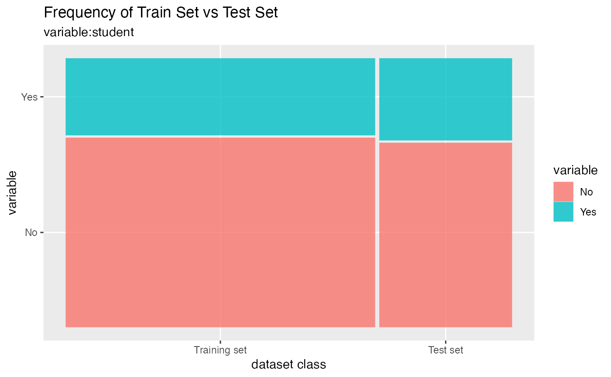
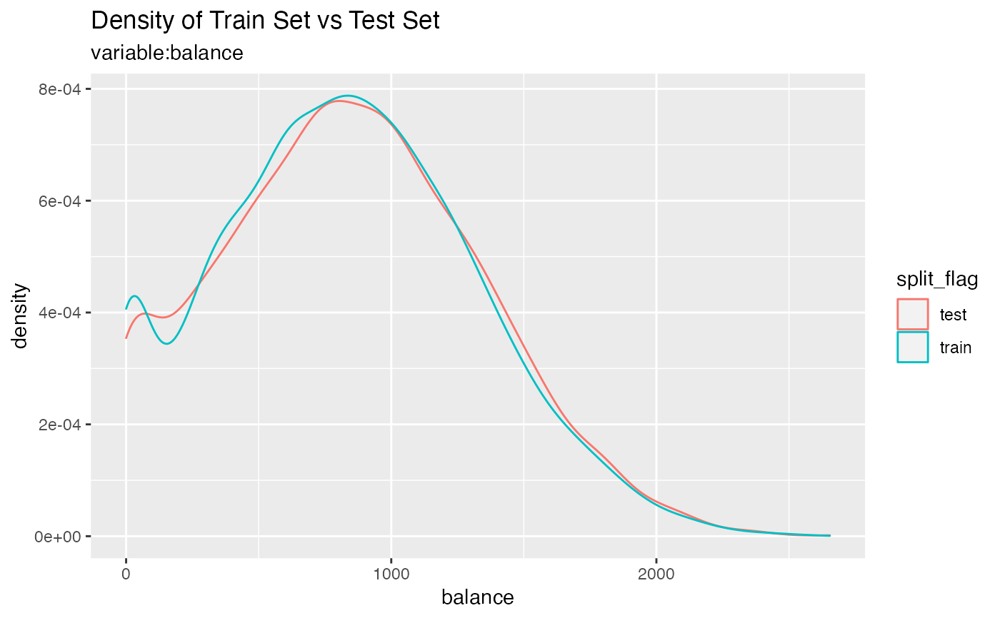

Plot compare information of the train set and test set included in the "split_df" class.
compare_plot(.data, ...)an object of class "split_df", usually, a result of a call to split_df().
one or more unquoted expressions separated by commas. Select the variable you want to plotting. You can treat variable names like they are positions. Positive values select variables; negative values to drop variables. If the first expression is negative, compare_target_category() will automatically start with all variables. These arguments are automatically quoted and evaluated in a context where column names represent column positions. They support unquoting and splicing.
There is no return value. Draw only the plot.
The numerical variables are density plots and the categorical variables are mosaic plots to compare the distribution of train sets and test sets.
library(dplyr)
# Credit Card Default Data
head(ISLR::Default)
#> default student balance income
#> 1 No No 729.5265 44361.625
#> 2 No Yes 817.1804 12106.135
#> 3 No No 1073.5492 31767.139
#> 4 No No 529.2506 35704.494
#> 5 No No 785.6559 38463.496
#> 6 No Yes 919.5885 7491.559
# Generate data for the example
sb <- ISLR::Default %>%
split_by(default)
sb %>%
compare_plot("income")

sb %>%
compare_plot()
#> Warning: `unite_()` was deprecated in tidyr 1.2.0.
#> Please use `unite()` instead.
#> This warning is displayed once every 8 hours.
#> Call `lifecycle::last_lifecycle_warnings()` to see where this warning was generated.


